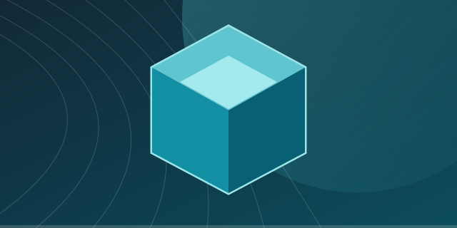

← All projectsCREATION TOOLS / SEEKPHASE
Obsidrel
A creative toolkit for building and managing custom Minecraft experiences.
In development
PROJECT OVERVIEW
Create, import and manage custom Minecraft content.
Obsidrel brings together content creation tools and import workflows for custom items, blocks, entities, interfaces and other Minecraft resources.
Custom contentCreator toolsImport workflows
This is a first-draft presentation. Official screenshots, detailed features and project links will be added after review.
Explore other projects ↗